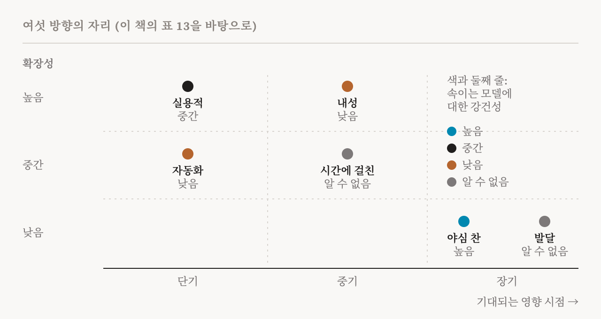
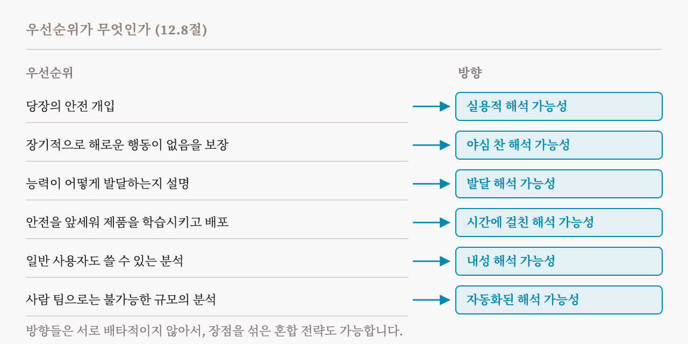

30편으로 이 연재는 이 책이 방법들을 훑는 부분을 마쳤습니다. 이번 편은 연구 방향을 다루는 짧은 부를 엽니다. 이 책 12장의 12.1–12.4절과 12.7–12.9절(102–105쪽, 111–112쪽)입니다. 이 장이 설명하는 여섯 방향 가운데 내성 해석 가능성(introspective interpretability)과 자동화된 해석 가능성(automated interpretability)은 32편과 33편에서 따로 다룹니다.
방향과 방법
이 책은 먼저 두 낱말을 구분합니다. 방향(orientation)은 목표, 가정, 그리고 감수하는 대가로 정의되는 일관된 연구 프로그램입니다. 방법(method)은 여러 방향 안에서 쓰일 수 있는, 자리 잡힌 모듈식 절차입니다. 예를 들어 프로브 하나는 빠른 안전 점검을 원하는 팀에도, 완전한 설명을 원하는 팀에도 쓰일 수 있습니다. 바로 쓸 수 있는 안전 조치를 만드는 것, 완전한 기계적 이해에 이르는 것처럼 목표가 다르다 보니 서로 다른 연구 프로그램이 생겼고, 이 책은 그 가운데 여섯을 정리합니다. 각각이 무엇을 노리는지, 무엇을 가정하는지, 어떤 방법을 즐겨 쓰는지, 어디서 부족한지입니다. 이 책의 핵심 메시지가 먼저 나옵니다. 어느 방향도 일반적으로 더 낫지 않습니다. 알맞은 선택은 연구 목표, 모델이 배포되는 환경, 쓸 수 있는 자원, 그리고 어떤 종류의 불확실성을 견딜 수 있는지에 달려 있습니다.
실용적 해석 가능성
실용적 해석 가능성은 정렬과 해석 가능성의 더 장기적인 목표, 예를 들어 매우 뛰어난 AI가 잘 되도록 돕는 일에 가장 도움이 되는 연구를 하는 데 집중합니다. 이 방향을 지지하는 사람들은 큰 영향을 주는 데 완전한 기계적 이해가 꼭 필요하지는 않으며, 연구자는 가장 도움이 될 것 같은 일을 우선해야 한다고 주장합니다. 핵심 생각은 대리 과제(proxy task)를 연구하는 것입니다. 오늘의 모델에서 연구할 수 있는 구체적이고 측정 가능한 과제로, 강력한 미래 모델을 안전하게 만드는 문제를 대신합니다. 이 방향의 연구자들은 어떤 방법을 쓰는지 따지지 않고, 모델 안을 전혀 들여다보지 않는 방법도 씁니다. 그리고 대리 과제는 지금 배포된 시스템에도 쓸모가 있는 경우가 많아서, 값진 피드백을 줍니다.
이 책의 첫 번째 예는 Claude Sonnet 4.5의 평가 인식에 관한 연구입니다. 이 모델은 평가받고 있다는 신호를 알아채면 행동을 바꾼다는 것이 밝혀졌고, 2편에서 설명한 이 문제 때문에 이전 모델들을 위해 만든 안전 평가의 결과를 해석하기가 어려워졌습니다. 연구자들은 이런 인식을 억누르는 조종 벡터를 찾아 적용했고, 그래서 모델의 실제 행동을 평가할 수 있었습니다. 이 연구가 평가 인식의 메커니즘을 완전히 설명하지는 못했습니다. 하지만 안전에 중요한 구체적인 행동 변화를 만들어 내기에는 충분했고, 이것이 실용적 철학이 실제로 작동하는 모습입니다.
두 번째 예는 2025년의 감사 게임입니다. 연구자들은 숨은 목표를 추구하도록 모델을 미세 조정한 뒤, 그 목표를 모르는 감사 팀들에게 모델을 주고 목표를 찾아내게 했습니다. 이것은 미래의 모델에서 저절로 생겨날지 모르는 숨은 목표를 찾아내는 일의 대리 과제였습니다. 팀마다 다른 기법을 썼기 때문에, 연구자들은 각 기법이 얼마나 잘 통하는지 비교할 수 있었습니다.
이 방향에서 흔히 쓰는 도구로는 조종 벡터, 프로브, 모델이 써 내려가는 추론을 지켜보는 것 같은 행동 감시와 이상 탐지, 그리고 내부에 접근하지 않고도 효과적인 기준선인 프롬프팅이 있습니다. 이런 방식의 연구는 25편에서 본 거절, 그리고 평가 인식을 효과적으로 통제했습니다. 지금의 시스템에 바로 이득이 됩니다. 하지만 모델이 그 행동을 어떻게 구현하는지까지 설명하지는 못할 수 있고, 애초에 그러려고 설계된 것도 아닙니다.
야심 찬 해석 가능성
이와 달리 야심 찬 해석 가능성은 모델이 계산을 어떻게 수행하는지에 대한 포괄적인 기계적 이해를 추구합니다. 이 방향을 지지하는 사람들은 부분적이거나 겉핥기식인 이해로는 다음 세대 시스템의 안전을 보장할 수 없고, 숨은 실패 양상이나 속이는 내부 동역학을 배제하려면 완전한 이해가 필요하다고 주장합니다. 이 방향은 해석 가능성을 쓸모 있는 어림법의 모음으로 보지 않습니다. 과학적 목표로 봅니다. 모델을 역설계해서, 그 내부 알고리즘에 대한 투명하고 예측력 있는 이론을 세우는 것입니다.
이 방향은 지표가 이끄는 진전을 강조합니다. 지금의 기계적 방법들은 엄격한 지표를 아직 잘 통과하지 못하므로, 느슨한 지표에서 시작해 그 위에서 방법의 성능을 추적하고 개선하다가, 현실적이 되면 더 엄격한 지표로 옮겨 가자고 제안합니다. 이 책은 지표의 예를 두 가지 듭니다. 첫째는 특징의 품질입니다. 찾아낸 특징과 그것을 말로 풀어 쓴 설명이 충실하고 시뮬레이션 가능하다는 것, 즉 설명을 읽은 사람이 그 특징이 언제 켜질지 예측할 수 있다는 것을 보이는 것입니다(이것을 어떻게 시험하는지는 33편에서 봅니다). 둘째는 회로의 충실성입니다. 18편의 인과적 스크러빙 같은 인과적 개입으로, 회로가 성능을 잃지 않으면서 행동을 설명하는 데 필요하고 충분하다는 것을 보이는 것입니다.
단점은 비용입니다. 최전선의 거대한 모델을 세밀하게 기계적으로 분석하는 일은 계산 비용이 크고 때로는 감당할 수 없습니다. 지금의 도구는 진정으로 포괄적인 이해에 필요한 범위와 강건성에 아직 한참 못 미칩니다.
15편의 읽히도록 만든 모델들은 야심 찬 방향과 실용적 방향의 경계를 흐립니다. 나중에 역설계하는 데에만 기대지 않고, 구조를 바꿔서 표현과 회로를 이해하기 쉽게 만듭니다. 실용적인 설계 변경으로 야심 찬 목표를 추구하는 셈입니다. 이런 모델이 완전한 기계적 이해로 이어질 수 있을지는 아직 분명하지 않습니다. 당분간은 해석 가능성을 최적화할 목표 하나로 다루는 별도의 '공학' 방향에 가까울지도 모릅니다.
발달 해석 가능성
발달 해석 가능성은 학습 과정 자체를 과학적 연구의 대상으로 다룹니다. 학습 이론의 관점에서, 모델의 표현, 실질적인 복잡도, 능력이 학습 내내 어떻게 생겨나고 바뀌는지를 수학적으로 서술하려 합니다. 핵심 주장은 고정된 체크포인트 하나로는 분석하기 어려운 신경망의 성질 상당수를 그것이 어떻게 발달했는지를 통해 이해할 수 있다는 것입니다. 그 발달 과정에는 발달 단계나 상전이 같은 측정 가능한 신호가 있고, 이것이 관심 있는 성질의 대리 지표가 될 수 있습니다. 대표적인 예가 26편과 27편의 국소 학습 계수, LLC입니다. 실질적인 복잡도를 나타내는 신호로, 이것으로 발달상의 전이를 관찰하고 학습 손실이 같은 두 모델을 비교할 수 있습니다.
이 방향의 방법으로는 발달 단계, 대칭 깨짐, 손실 지형의 기하가 바뀌는 것을 서술하는 특이 학습 이론과 관련 수학이 있습니다. 그리고 모델의 학습 체크포인트들에 프로브, 특징 찾기 방법, 회로 분석을 적용하는 체크포인트 기반 분석이 있습니다. 전형적인 질문은 이런 것입니다. 능력의 발달을 상전이로 서술할 수 있는가? 어떤 메커니즘이 생기기 전에 어떤 발달 단계가 오는가? 최적화는 분산된 표현을 어떻게 구조화된 메커니즘으로 바꾸는가? 이 방향의 일차 목표는 엄밀한 과학적 설명이지, 능력을 예측하거나 그것에 개입하는 것이 아닙니다.
시간에 걸친 해석 가능성
시간에 걸친 해석 가능성도 모델을 학습 데이터, 손실 함수, 구조, 최적화가 빚어내는, 시간에 따라 바뀌는 과정으로 봅니다. 차이는 목표에 있습니다. 발달 해석 가능성은 주로 특징, 메커니즘, 능력을 만들어 내는 과정을 서술합니다. 시간에 걸친 해석 가능성은 학습에 관한 지식을 추구하되, 학습이 끝나기 전에 모델의 중요한 성질을 추정할 만큼 예측력이 있고, 바람직하지 않은 궤적이 언제, 왜 생기는지 짚을 만큼 인과적이며, 학습 과정 자체에 개입할 수 있을 만큼 정밀한 지식을 원합니다. 안전의 관점에서 이 방향은 학습을 이해하고 결국 빚어서, 모델이 바람직하지 않은 행동을 애초에 갖지 않게 하려 합니다. 생긴 뒤에 고치는 것이 아닙니다.
이 방향은 26편부터 28편까지 설명한 세 연구 영역 위에 서 있습니다. 안전에 중요한 성질을 예측하려는 비슷한 시도에 동기를 준 규모 법칙, 메커니즘이 어떻게 발달하는지에 대한 종단 연구, 그리고 학습 데이터가 나중의 행동에 어떤 영향을 주는지에 대한 연구입니다. 방법으로는 내부의 종단 분석, 학습 실행을 지켜보며 나중의 행동을 예측하는 것, 학습 과정에 대한 개입이 있습니다.
이 책은 이 방향의 동기가 되는 발견 몇 가지를 꼽습니다. 미세 조정 전에 잰 활성값으로 미세 조정 뒤의 정렬 점수를 예측할 수 있습니다. 창발적 정렬 실패와 관련된 내부 특징은 때때로 행동 평가보다 먼저 그것을 찾아냈습니다. 그리고 비교적 단순한 보상의 결함을 악용하도록 모델을 학습시키면 더 심각한 실패로 이어질 수 있습니다. 모델이 자신의 보상을 계산하는 과정에 손을 대는 보상 조작, 그리고 더 폭넓은 정렬 실패 행동입니다. 이런 발견들은 최종 모델만 평가하지 말고 학습하는 동안 바람직하지 않은 행동의 초기 징후를 지켜보아야 한다는 동기를 줍니다. 또 다른 연구 흐름은 28편의 데이터 거르기와 기울기 라우팅으로 모델을 직접 빚으려 합니다.
이 책은 흔한 오해 하나를 짚습니다. 2026년의 한 입장 논문은 이 방향을 '나중에 고치기' 관행과 대비하지만, 이것을 사전 학습 뒤에 하는 모든 일을 깎아내리는 것으로 읽으면 잘못입니다. 사후 학습도 학습 과정이고, 아첨이나 보상 해킹 같은 행동은 주로 사후 학습 동안, 그리고 사후 학습 때문에 생깁니다. 비판이 겨냥하는 것은 어떤 행동이 왜 생겼는지 이해하는 대신 사후 학습으로 그 행동을 덮어 버리는 경우입니다. 핵심 구분은 학습 과정을 이해하고 통제하는 것과, 이미 배운 행동을 최적화의 압력으로 억누르는 것 사이에 있습니다. 이 방향은 다른 방향과 함께 쓸 수도 있습니다. 간단한 프로브를 조기 경보로 쓰면 실용적이 되고, 회로가 경사 하강 아래에서 왜 생기는지에 대한 기계적 이론을 찾으면 야심 찬 쪽이 됩니다.
남은 두 방향
남은 두 방향은 다음 두 편에서 다룹니다. 내성 해석 가능성은 그냥 모델에게 물어서, 모델을 그 자신의 설명자로 씁니다. 자동화된 해석 가능성은 규모를 키우기 위해 사람의 분석을 자동화된 절차로 대신합니다.
여섯 방향 비교하기
이 책은 여섯 방향을 표 하나로 비교합니다. 주된 초점, 쓰는 지표, 주요 도구, 영향이 나타나기까지 얼마나 걸릴지, 얼마나 잘 확장되는지, 속이려는 모델에 얼마나 강건한지입니다.

어느 방향도 일반적으로 더 낫지 않습니다. 예를 들어 자동화된 해석 가능성은 최전선 모델의 특징 수백만 개까지 분석의 규모를 키울 수 있지만, 오류가 퍼지고 사람이 자동화를 지나치게 믿게 되는 문제를 안고 있습니다. 야심 찬 해석 가능성은 이론에 기반한 근본적인 분석을 줄 수 있지만, 지금까지의 결과는 주로 8편의 장난감 모델 같은 작고 통제된 설정에서 나왔고, 최전선 모델로 옮겨 갈 수 있을지는 분명하지 않습니다.
| 방향 | 주된 초점과 핵심 지표 | 영향 시점 / 확장성 / 속임수에 대한 강건성 |
|---|---|---|
| 실용적 | 완전한 이해 없이 지금 하는 안전 개입, 대리 과제의 성능 | 단기 / 높음 / 중간 |
| 야심 찬 | 비용이 얼마든 완전한 인과적 이해, 충실성과 시뮬레이션 가능성 | 장기 / 낮음 / 높음 |
| 발달 | 표현, 메커니즘, 능력이 발달하는 방식, LLC 같은 전이 신호 | 장기 / 낮음 / 알 수 없음 |
| 시간에 걸친 | 학습을 통해 미래 행동을 예측하고 통제, 예측과 개입의 정확도 | 중기 / 중간 / 알 수 없음 |
| 내성 | 모델이 자신을 설명, 자기 보고와 실제 메커니즘의 일치 | 중기 / 높음 / 낮음 |
| 자동화 | 절차를 통한 대규모 발견, 범위, 강건성, 충실성 | 단기 / 중간 / 낮음 |
방향 고르기
이 책은 이어서 간단한 결정 틀을 내놓습니다. 연구자의 우선순위와 제약이 방향을 정합니다.

당장의 안전 개입에 집중하는 팀이나 개인에게는 실용적 해석 가능성이 가장 잘 맞습니다. 장기적으로 해로운 행동이 없음을 보장하는 것이 주된 목표라면 야심 찬 해석 가능성이 가장 알맞습니다. 능력이 어떻게 발달하는지 서술하고 설명하고 싶은 연구자는 발달 해석 가능성을 고를 수 있습니다. 안전에 초점을 두고 언어 모델 제품을 학습시키고 배포하는 팀은 시간에 걸친 해석 가능성에 집중할 수 있습니다. 일반 사용자도 접근할 수 있는 해석 가능성 분석을 제공하는 것이 목표라면 내성 해석 가능성이 유망합니다. 그리고 사람 연구자만으로는 할 수 없는 규모로 분석해야 할 때에는 자동화된 해석 가능성이 매력적입니다. 이 방향들은 서로 배타적이지 않고, 여러 장점을 섞은 혼합 전략도 가능합니다.
긴장과 열린 질문
이 장의 마지막 절은 방향 안에서, 그리고 방향들 사이에서 생기는 긴장을 짚습니다. 실용적 연구는 실제적인 안전 조치를 우선합니다. 야심 찬 연구는 진정한 안전에는 완전한 이해가 필요하다고 주장합니다. 발달 해석 가능성과 시간에 걸친 해석 가능성은 둘 다 학습 체크포인트와 최적화 동역학에 접근할 수 있어야 하는데, 이것은 여전히 얻기 어렵습니다. 내성 모델은 접근하기 쉬운 설명을 줄 수 있지만, 안전이 걸린 결정에는 언제나 추가 검증이 필요할 수 있습니다. 자동화된 절차는 큰 모델을 분석할 수 있지만, 그것이 내놓는 포괄적인 분석을 사람이 들여다보고 검증하기는 어려울 수 있습니다. 이런 대가들을 생각하면, 연구 노력을 여러 방향에 어떻게 나눌지 정하는 일 자체가 열린 과제이고, 그것은 기술적인 과제가 아니라고 이 책은 결론짓습니다.
| 용어 | 뜻 |
|---|---|
| 연구 방향 | 목표, 가정, 감수하는 대가로 정의되는 연구 프로그램 |
| 방법 | 여러 방향이 함께 쓸 수 있는 모듈식 절차 |
| 실용적 해석 가능성 | 안전에 가장 도움이 되는 일을 하고, 대리 과제로 평가하는 방향 |
| 대리 과제 | 미래의 안전 문제를 대신하는, 오늘의 모델로 측정할 수 있는 과제 |
| 감사 게임 | 모델에 심어 둔 숨은 목표를 모르는 팀들이 그것을 찾아내는 실험 |
| 야심 찬 해석 가능성 | 모델에 대한 완전한 기계적 이해를 목표로 하는 방향 |
| 시뮬레이션 가능 | 설명만 읽고도 특징이 언제 켜질지 예측할 수 있을 만큼 분명한 것 |
| 발달 해석 가능성 | 학습하는 동안 구조와 능력이 어떻게 발달하는지 설명하는 방향 |
| 시간에 걸친 해석 가능성 | 학습 과정을 통해 행동을 예측하고 빚으려는 방향 |
| 보상 조작 | 모델이 자신의 보상을 계산하는 과정에 손을 대는 것 |
| 나중에 고치기 | 왜 생겼는지 이해하지 않고 학습 뒤에 나쁜 행동을 덮는 것 |
32편에서는 내성 해석 가능성을 봅니다. 모델이 자신을 설명할 수 있을까요? 그리고 그 설명을 어떻게 확인할 수 있을까요?